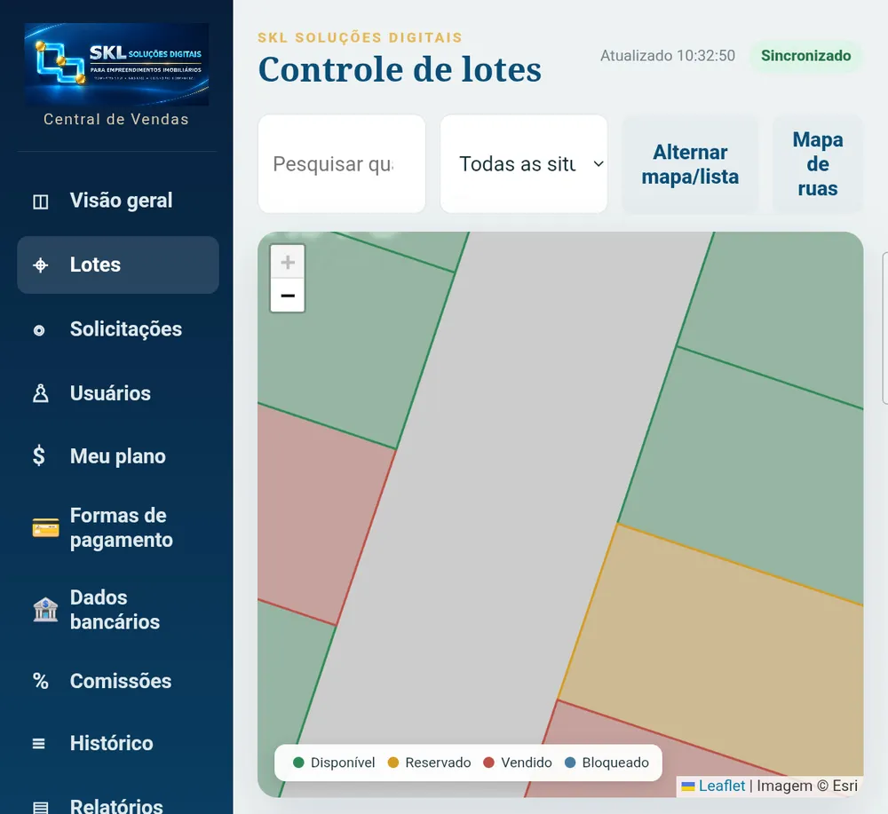
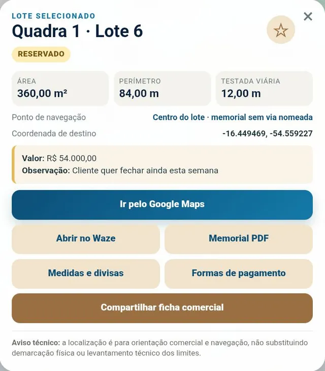

Mapa colorido por situação
Quadras e lotes coloridos por disponível, reservado, vendido ou bloqueado, com imagem de satélite. Toda a equipe vê a mesma situação no mesmo instante.
SKL Soluções Digitais›Sistema para loteamentos
LoteamentosA SKL nasceu próxima da realidade dos loteamentos. Cada lote fica ligado à sua posição real no mapa, aos seus dados técnicos e ao processo comercial — da consulta do corretor ao contrato e à comissão.
Quadras e lotes coloridos por disponível, reservado, vendido ou bloqueado, com imagem de satélite. Toda a equipe vê a mesma situação no mesmo instante.
Área, perímetro, testada, divisas, valor e memorial descritivo em PDF de cada lote, além de rota pelo Google Maps ou Waze.
O corretor pede a reserva pelo app; a Central tem 20 minutos para responder e a reserva aprovada dura 2 horas, com contador na tela. Sem lote preso.
A Central altera vários lotes de uma vez, e duas pessoas não sobrescrevem a mesma alteração sem perceber.
Planos de pagamento com etapas e simulador de financiamento (SAC e Price) ligado ao valor do lote.
Contrato em PDF com o modelo da empresa, comissão por corretor e relatórios de vendas e ranking em PDF e Excel.


Pelo mapa, com imagem de satélite, ou pelo localizador por quadra e lote. A ficha mostra área, valor, medidas, memorial e rota até o lote.
Sim. Área, perímetro, testada e divisas de cada lote e o memorial descritivo em PDF ficam na ficha do lote, acessível ao corretor no celular. Os dados são carregados na implantação.
Ele envia o pedido de reserva ou de indicação de venda pelo app e a Central aprova ou recusa. A situação do lote só muda pela Central, e todo pedido segue os prazos automáticos.
A integração já construída é com o CV CRM, via API; outros sistemas são avaliados caso a caso, conforme o fornecedor ofereça API. A SKL também funciona sozinha, com a base própria da plataforma.
Agende uma demonstração ao vivo, com o aplicativo em funcionamento, e receba uma proposta sob medida para a sua operação.